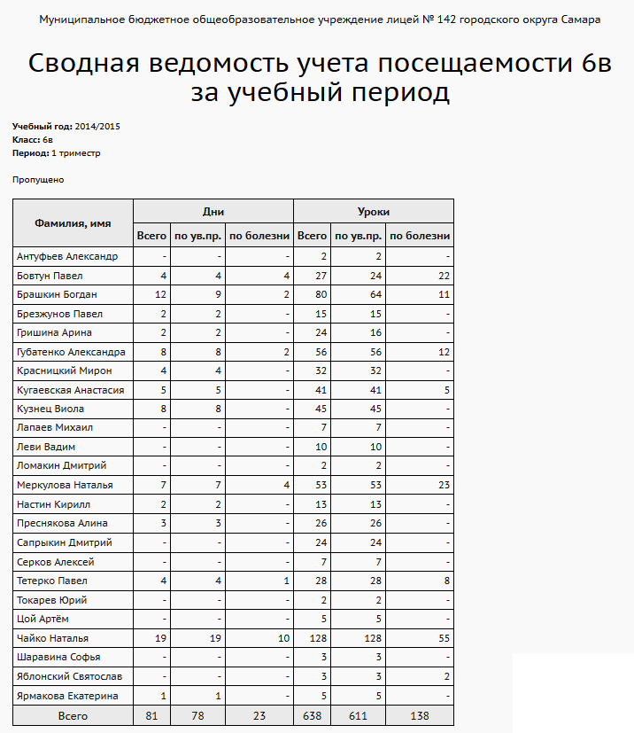

|
Сводная ведомость учета посещаемости
|
| · | "Всего" - суммарное количество пропусков с причинами "НП", "ОТ", УП", "Б",
|
| · | "по ув.пр." - суммарное количество пропусков с причинами "УП и "Б",
|
| · | "по болезни" - суммарное количество пропусков с причиной "Б".
|
